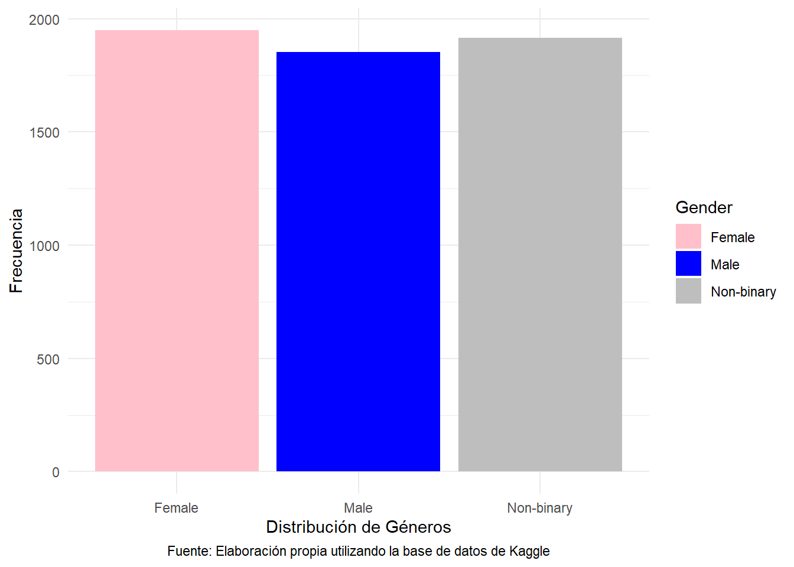
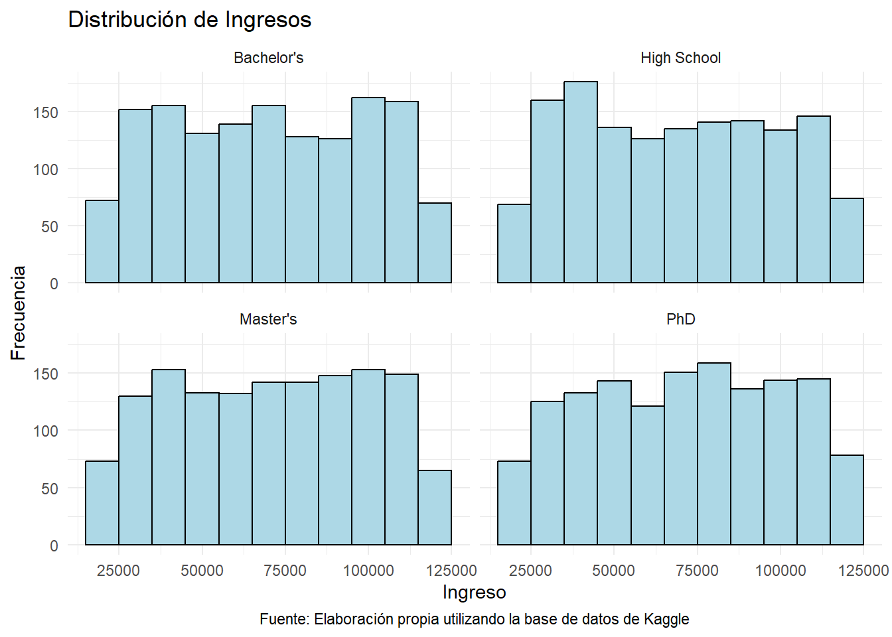
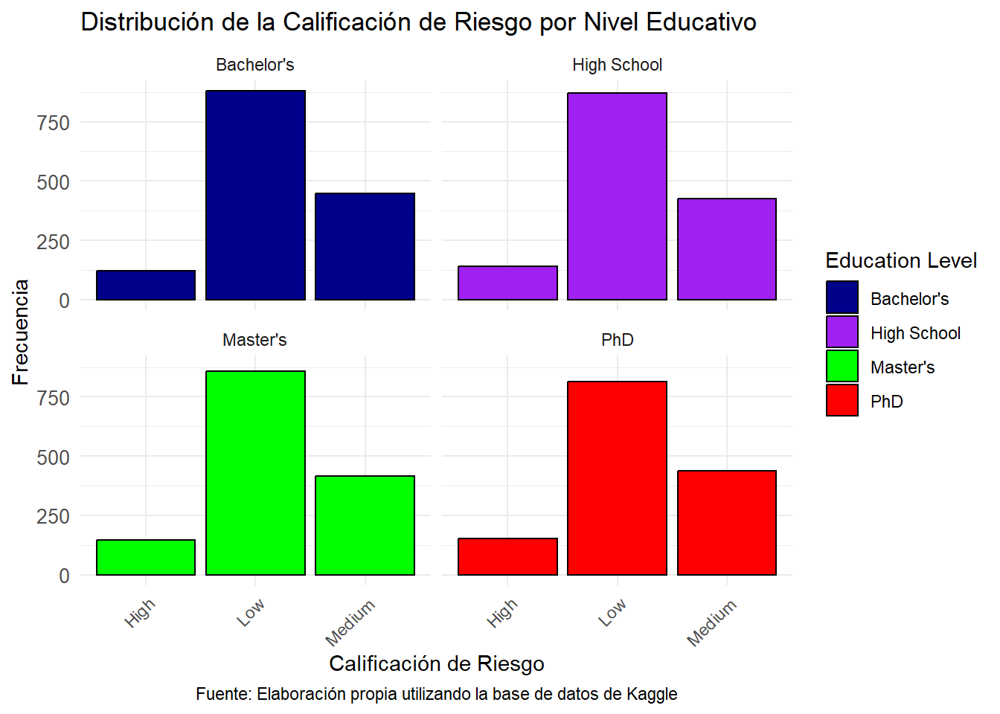

Rows: 15000 Columns: 20
── Column specification ────────────────────────────────────────────────────────
Delimiter: ";"
chr (10): Gender, Education Level, Marital Status, Loan Purpose, Employment ...
dbl (10): Age, Income, Credit Score, Loan Amount, Years at Current Job, Debt...
ℹ Use `spec()` to retrieve the full column specification for this data.
ℹ Specify the column types or set `show_col_types = FALSE` to quiet this message.2 Bitácora 2
2.1 Parte de Planificación
2.1.1 Ordenamiento de la Literatura
Tabla de Organización y Literatura
2.2 Enlaces de la Literatura
Título: La valoración del riesgo financiero.
Resumen: El riesgo financiero es uno de los tipos de riesgo más importantes, por eso es de suma importancia entender su significado y qué herramientas se pueden utilizar para su debida gestión. En este caso se enfocan en tres métodos distintos: la desviación estándar, la beta del mercado y el valor en riesgo; así como comprender la rentabilidad ajustada con el ratio de Sharpe. Al utilizarlos en estrategias de cobertura de riesgo financiero se logra una reducción o mitigación del mismo en diferentes intrumentos financieros como las carteras de inversión.
Contraste: Este trabajo, a comparación del artículo de Solarte J. y Caicedo E. titulado Modelos para otorgamiento y seguimiento en la gestión del riesgo de crédito, logra explicar de manera más amigable y general los conceptos del riesgo financiero, lo que hace que el artículo de Chicu sea más comprensible para todas las personas. Sin embargo, esta falta de rigurosidad puede generar fallas en los procesos más complejos del tema de investigación, ya que el mismo artículo de Solarte y Caicedo utiliza fórmulas y métodos más complejos que si bien no son tan fáciles de entender, logran una mejor recopilación de resultados.
Comentario Propio: Si bien nos parece importante que una explicación sea comprensible para la mayor cantidad de personas, no tener la suficiente precisión en un tema tan complicado como lo es el riesgo financiero puede causar ignorancia en los conceptos avanzados, como por ejemplo los métodos paramétricos y no paramétricos y su metodología. Sin embargo, sentimos que esta investigación nos ayudó con la afinidad a la hora de seleccionar las palabras adecuadas en el desarrollo de nuestra investigación.
Título: La evaluación del riesgo de crédito en las instituciones de microfinanzas: estado del arte.
Resumen: El análisis de los modelos de credit scoring muestra que estos pueden ser utilizados en diversas dimensiones, aunque hay una preferencia por predecir el riesgo de retrasos costosos en los microcréditos los cuales están bajo control de las instituciones financieras para mitigarlos. La literatura teórica destaca la importancia de la información estadística cualitativa en estos modelos, además de incluir variables relacionadas con el prestatario, su negocio y el préstamo. Existe una preferencia por las téncicas paramétricas como por ejemplo la regresión logística. Aún así, en los últimos años se registra un aumento en el uso de técnicas no paramétricas que logran un mayor poder predictivo en la detección de incumplimientos de microcréditos. Con esto, las instituciones están incorporando estas herramientas para convertirlas en una práctica estándar, como en las instituciones bancarias; las cuales mejoran la consistencia, transparencia, control de calidad y optimización de los procesos.
Contraste: Éste trabajo, a diferencia del artículo de Chicu D. titulado La valoración del riesgo financiero, logra realizar no sólo un análisis del credit scoring por medio de teoría estadística, sino que también logra plantear un análisis macroeconómico y toma en cuenta las repercusiones que las fallas en los procesos de gestion de riesgos podría generar en el sistema financiero. Sin embargo, no es tan específico en la parte matemática a la hora de estimar probabilidades de que algo pase.
Comentario Propio: Para nosotros es importante entender también la teoría desde la perspectiva economista ya que nos ayuda a entender a qué nos enfrentamos y cómo podemos aplicar diferentes metodologías de investigación.
Título: Modelos para otorgamiento y seguimiento en la gestión del riesgo de crédito.
Resumen: El credit scoring es un método estadístico para estimar la probabilidad de inclumpimiento de un prestatario, usando su información histórica y estadística para obtener un indicador que permita distinguir la calidad de un deudor. Los modelos de scoring son muy importantes para los procesos de gestión del crédito, los cuales buscan explicar la composición y operatividad de estos modelos utilizando grandes bases de datos. La información que resulta de estos modelos permite el análisis de la toma de decisión de si se otorga ó no un crédito a una persona. Por medio de cuatro modelos distintos se logra un procedimiento multicapa para obtener información precisa para calificar a un cliente como bueno o malo para la empresa financiera.
Contraste: Este trabajo logra ser más específico que los demás en cuanto a los métodos de gestión de riesgo se refiere. Además coincide con varios de los artículos recopilados respecto a la utilización del método de regresión logística como herramienta de calificación de crédito.
Comentario Propio: Consideramos que este artículo es el más completo en cuanto a materia matemática se refiere, ya que logra explicar los métodos de manera clara y además los muestra con las gráficas y resultados obtenidos. De hecho, es de gran ayuda que las variables a trabajar sean similares a las que la investigación utiliza.
Título: Variables determinantes de la probabilidad de incumplimiento de un microcrédito en una entidad microfinanciera del Perú, una aproximación bajo el modelo de regresión logística binaria.
Resumen: Después de realizar una estimación probabilística del incumplimiento de un microcrédito por medio de la aproximación de una función logística binaria, se determina que son las variables cualitativas como el estado civil, edad y tipo de vivienda junto con las variables de plazo, número de créditos con la entidad y el saldo deudor; las que generan un modelo correctamente ajustado bajo el modelo de regresión logística. La cual logra una capacidad predictiva aceptable medida por la curva ROC.
Contraste: Este trabajo, a diferencia de “La evaluación del riesgo de crédito en las instituciones de microfinanzas: estado del arte”, determina las variables necesarias para un estudio de microfinanzas. Sin embargo, coinciden en todo lo referente a las ventajas y deventajas del uso de la calificación crediticia, aunque si cabe mencionar que esta investigación tambien logra hacer conclusiones de los inversores y reguladores como parte de los responsables de la ineficiencia que ha dado el uso excesivo de ésta calificación.
Comentario Propio: Fue de mucha ayuda entender la noción de qué variables utilizar y porqué son importantes para un estudio de calificación de crédito.
Título: Calificación de riesgo: definición e influencia en la última década.
Resumen: Las agencias de calificación crediticia han crecido en las últimas décadas por su capacidad para reducir las asimetrías de información en los mercados, facilitando la liquidez y aumentando los participantes. Sin embargo, no han cumplido con los efectos positivos esperados en la última década, se han expuesto fallas en su funcionamiento, como su papel en la burbuja de deuda y la crisis económica, lo que ha generado inestabilidad y ralentizado la recuperación. La importancia que los inversores le dieron a las calificaciones crediticias para la toma de desiciones fue desmedida al no tomar en cuenta el nivel de riesgo, lo cual se relaciona a las causas de las últimas crisis financieras e hipotecarias.
Contraste: En comparación de la investigación titulada “La evaluación del riesgo de crédito en las instituciones de microfinanzas: estado del arte”, ambos logran concluir cosas muy similares en cuanto a la importancia del credit score, sus ventajas y desventajas. Sin embargo, logra aportar más en cuanto a las ineficiencias que ha tenido sobrevalorarlo y los momentos en los que ha generado una crisis.
Comentario Propio: Este trabajo, de igual forma, es de suma importancia para entender la manera en que se realizan calificaciones crediticias y de qué formas analizarlas. Para así utilizarlas en nuestros estudios estadísticos y entender qué otras variables ó conceptos tomar en cuenta para los futuros resultados a obtener.
Título: Conceptualización del riesgo de los mercados financieros.
Resumen: El riesgo está inmerso en todas las actividades humanas y es entendido como la probabilidad de ocurrencia de un evento que podría inducir un perjuicio. Cuando se habla de riesgo financiero, se habla de una eventual pérdida de dinero que signifique una afectación al sistema financiero ó a alguna institución que sea parte del mismo. Este trabajo es una recopilación algunos de los riesgos en los mercados financieros y presenta algunos métodos válidos para su valoración.
Contraste: Esta investigación, a diferencia de las demás investigaciones, logra tener un glosario completo de definiciones relacionadas al riesgo financiero, sin embargo no va más allá de ser sólamente un artículo de definiciones. Por lo que en materia teórica no tiene nada que aportar.
Comentario Propio: Gracias a estas definiciones, hemos logrado definir mejor qué queremos estudiar de manera más específica y cómo utilizar ciertos conceptos de mejor manera.
3 Bitácora 2
3.1 Parte de Planificación
3.1.1 Ordenamiento de la Literatura
3.2 Enlaces de la Literatura
3.3 Análisis Estadístico
Como base para realizar este análisis estadístico, nos estamos guíando con la guía del curso de Herramientas de Ciencias de Datos, el cual adjuntamos el link a dicha guía (Solis 2024) y también estamos utilizando el libro escrito por Wickham, el cual también adjuntamos el link (Hadley Wickham 2019).
A modo de introducción, el análisis estadístico consiste en un conjunto de herramientas o técnias que se utilizan para la recolección, el análisis e interpretación de datos. Para este trabajo es imprescindible contar con este set de herramientas.
3.3.1 Análisis Descriptivo
La base de datos ya se encuentra en formato en tidy, recordemos que el formato tidy fue popularizado por el autor Hadley Wickham, donde indican que cada variable debe tener su propia columna y cada observación su propia fila. Nuestra base de datos cumple con estar en formato tidy.
Vamos a llamar a nuestra base de datos, la cual vamos a utilizar durante el trabajo.
head(base_financial_risk_assessment)# A tibble: 6 × 20
Age Gender `Education Level` `Marital Status` Income `Credit Score`
<dbl> <chr> <chr> <chr> <dbl> <dbl>
1 49 Male PhD Divorced 72799 688
2 57 Female Bachelor's Widowed NA 690
3 21 Non-binary Master's Single 55687 600
4 59 Male Bachelor's Single 26508 622
5 25 Non-binary Bachelor's Widowed 49427 766
6 30 Non-binary PhD Divorced NA 717
# ℹ 14 more variables: `Loan Amount` <dbl>, `Loan Purpose` <chr>,
# `Employment Status` <chr>, `Years at Current Job` <dbl>,
# `Payment History` <chr>, `Debt-to-Income Ratio` <dbl>,
# `Assets Value` <dbl>, `Number of Dependents` <dbl>, City <chr>,
# State <chr>, Country <chr>, `Previous Defaults` <dbl>,
# `Marital Status Change` <dbl>, `Risk Rating` <chr>Antes de aplicar cualquier gráfico o análisis de datos a nuestra base de datos, es importante eliminar las variables que no aportan al estudio, por ello, vamos a eliminar los valores NA que vengan en nuestra base de datos.
Base_limpia <- na.omit(base_financial_risk_assessment)
head(Base_limpia)# A tibble: 6 × 20
Age Gender `Education Level` `Marital Status` Income `Credit Score`
<dbl> <chr> <chr> <chr> <dbl> <dbl>
1 49 Male PhD Divorced 72799 688
2 21 Non-binary Master's Single 55687 600
3 59 Male Bachelor's Single 26508 622
4 42 Non-binary Master's Single 116212 707
5 55 Male High School Married 70978 706
6 56 Non-binary PhD Married 21084 702
# ℹ 14 more variables: `Loan Amount` <dbl>, `Loan Purpose` <chr>,
# `Employment Status` <chr>, `Years at Current Job` <dbl>,
# `Payment History` <chr>, `Debt-to-Income Ratio` <dbl>,
# `Assets Value` <dbl>, `Number of Dependents` <dbl>, City <chr>,
# State <chr>, Country <chr>, `Previous Defaults` <dbl>,
# `Marital Status Change` <dbl>, `Risk Rating` <chr>Ahora hacemos un análisis estadístico de nuestra base de datos, de todas las variables.
# Instalar kableExtra si no lo tienes
# install.packages("kableExtra")
library(dplyr)
Adjuntando el paquete: 'dplyr'The following objects are masked from 'package:stats':
filter, lagThe following objects are masked from 'package:base':
intersect, setdiff, setequal, unionlibrary(tidyr)
library(knitr)
library(kableExtra)
Adjuntando el paquete: 'kableExtra'The following object is masked from 'package:dplyr':
group_rows# Como nuestras variables no son del todo numéricas, hay que hacerlo para las variables que son numéricas y para las variables que son categóricas.
# Primero hacemos las variables numéricas.
resumen_numericas <- Base_limpia %>%
summarise(
Edad_Media = mean(Age, na.rm = TRUE),
Edad_Minima = min(Age, na.rm = TRUE),
Edad_Maxima = max(Age, na.rm = TRUE),
Ingreso_Medio = mean(Income, na.rm = TRUE),
Ingreso_Varianza = var(Income, na.rm = TRUE),
Ingreso_Minimo = min(Income, na.rm = TRUE),
Ingreso_Maximo = max(Income, na.rm = TRUE),
Prestamo_Medio = mean(`Loan Amount`, na.rm = TRUE),
Prestamo_Varianza = var(`Loan Amount`, na.rm = TRUE),
Prestamo_Minimo = min(`Loan Amount`, na.rm = TRUE),
Prestamo_Maximo = max(`Loan Amount`, na.rm = TRUE)
)
# Variables Categóricas
resumen_categoricas <- tibble(
Variable = c("Nivel de Educación", "Género", "Estado Civil"),
Frecuencia = c(
paste(names(table(Base_limpia$`Education Level`)), collapse = ", "),
paste(names(table(Base_limpia$Gender)), collapse = ", "),
paste(names(table(Base_limpia$`Marital Status`)), collapse = ", ")
)
)
# Luego resumimos la información en un cuadro, para presentarlo mejor.
tabla_resumen <- data.frame(
Variable = c("Edad", "Ingresos", "Monto del Préstamo", resumen_categoricas$Variable),
Media = c(resumen_numericas$Edad_Media, resumen_numericas$Ingreso_Medio, resumen_numericas$Prestamo_Medio, rep(NA, 3)),
Varianza = c(NA, resumen_numericas$Ingreso_Varianza, resumen_numericas$Prestamo_Varianza, rep(NA, 3)),
Mínimo = c(resumen_numericas$Edad_Minima, resumen_numericas$Ingreso_Minimo, resumen_numericas$Prestamo_Minimo, rep(NA, 3)),
Máximo = c(resumen_numericas$Edad_Maxima, resumen_numericas$Ingreso_Maximo, resumen_numericas$Prestamo_Maximo, rep(NA, 3)),
Frecuencia = c(rep(NA, 3), resumen_categoricas$Frecuencia)
)
# Mostrar la tabla con la descripción
tabla_resumen_kable <- kable(tabla_resumen, caption = "Resumen de Variables Numéricas y Categóricas") %>%
kable_styling() %>%
add_header_above(c(" " = 1, "Resumen" = 5))
tabla_resumen_kable <- tabla_resumen_kable %>%
kableExtra::footnote(general = "Fuente: Elaboración propia utilizando la base de datos de Kaggle")
tabla_resumen_kable| Variable | Media | Varianza | Mínimo | Máximo | Frecuencia |
|---|---|---|---|---|---|
| Edad | 43.5817 | NA | 18 | 69 | NA |
| Ingresos | 70190.3585 | 849685113 | 20014 | 119978 | NA |
| Monto del Préstamo | 27577.0679 | 168240584 | 5001 | 49978 | NA |
| Nivel de Educación | NA | NA | NA | NA | Bachelor's, High School, Master's, PhD |
| Género | NA | NA | NA | NA | Female, Male, Non-binary |
| Estado Civil | NA | NA | NA | NA | Divorced, Married, Single, Widowed |
| Note: | |||||
| Fuente: Elaboración propia utilizando la base de datos de Kaggle |
Presentamos las variables de más importancia en nuestro estudio
| Variable | Media | Varianza | Mínimo | Máximo | Frecuencia |
|---|---|---|---|---|---|
| Edad | 43.5817 | NA | 18 | 69 | NA |
| Ingresos | 70190.3585 | 849685113 | 20014 | 119978 | NA |
| Monto del Préstamo | 27577.0679 | 168240584 | 5001 | 49978 | NA |
| Nivel de Educación | NA | NA | NA | NA | Bachelor's, High School, Master's, PhD |
| Género | NA | NA | NA | NA | Female, Male, Non-binary |
| Estado Civil | NA | NA | NA | NA | Divorced, Married, Single, Widowed |
| Note: | |||||
| Fuente: Elaboración propia utilizando la base de datos de Kaggle |
Con nuestra base de datos limpia, vanmos a proceder a calcular algunos estadísticos importantes, por separado. Estos son los datos resumidos de la variable edad.
library(dplyr)
# Calculamos las estadísticas de interés para las variables y las almacenamos en un solo data.frame
resultado <- Base_limpia %>%
summarise(
# Estadísticos para la variable edad/Age
media_edad = mean(Age, na.rm = TRUE),
varianza_edad = var(Age, na.rm = TRUE),
min_edad = min(Age, na.rm = TRUE),
max_edad = max(Age, na.rm = TRUE),
# Estadísticos para la variable ingreso/Income
media_ingresos = mean(Income, na.rm = TRUE),
varianza_ingresos = var(Income, na.rm = TRUE),
min_ingresos = min(Income, na.rm = TRUE),
max_ingresos = max(Income, na.rm = TRUE),
# Estadísticos para la variable record_crediticio/Credit Score
media_record_crediticio = mean(`Credit Score`, na.rm = TRUE),
varianza_record_crediticio = var(`Credit Score`, na.rm = TRUE),
min_record_crediticio = min(`Credit Score`, na.rm = TRUE),
max_record_crediticio = max(`Credit Score`, na.rm = TRUE),
# Estadísticos para la variable monto del préstamo/Loan Amount
media_monto_prestamo = mean(`Loan Amount`, na.rm = TRUE),
varianza_monto_prestamo = var(`Loan Amount`, na.rm = TRUE),
min_monto_prestamo = min(`Loan Amount`, na.rm = TRUE),
max_monto_prestamo = max(`Loan Amount`, na.rm = TRUE),
# Estadísticos para la variable años de trabajo/Years at Current Job
media_anyos_trabajo = mean(`Years at Current Job`, na.rm = TRUE),
varianza_anyos_trabajo = var(`Years at Current Job`, na.rm = TRUE),
min_anyos_trabajo = min(`Years at Current Job`, na.rm = TRUE),
max_anyos_trabajo = max(`Years at Current Job`, na.rm = TRUE)
)
# Imprimimos el resultado
print(resultado)# A tibble: 1 × 20
media_edad varianza_edad min_edad max_edad media_ingresos varianza_ingresos
<dbl> <dbl> <dbl> <dbl> <dbl> <dbl>
1 43.6 218. 18 69 70190. 849685113.
# ℹ 14 more variables: min_ingresos <dbl>, max_ingresos <dbl>,
# media_record_crediticio <dbl>, varianza_record_crediticio <dbl>,
# min_record_crediticio <dbl>, max_record_crediticio <dbl>,
# media_monto_prestamo <dbl>, varianza_monto_prestamo <dbl>,
# min_monto_prestamo <dbl>, max_monto_prestamo <dbl>,
# media_anyos_trabajo <dbl>, varianza_anyos_trabajo <dbl>,
# min_anyos_trabajo <dbl>, max_anyos_trabajo <dbl>resultado$media_edad[1] 43.5817resultado$varianza_edad[1] 217.7303resultado$min_edad[1] 18resultado$max_edad[1] 69Estos son los datos resumidos de la variable Ingresos
resultado$media_ingresos[1] 70190.36resultado$varianza_ingresos[1] 849685113resultado$min_ingresos[1] 20014resultado$max_ingresos[1] 119978Estos son los datos resumidos de la variable Monto del Préstamo
resultado$media_monto_prestamo[1] 27577.07resultado$varianza_monto_prestamo[1] 168240584resultado$min_monto_prestamo[1] 5001resultado$max_monto_prestamo[1] 49978Resumimos la información obtenida en un cuadro, para una mejor visualización de ellos.
library(knitr)
library(kableExtra)
# Creamos una tabla para resumir la información obtenida
tabla_resumen <- data.frame(
Variable = c("Edad", "Ingresos", "Monto del Préstamo"),
Media = c(resultado$media_edad, resultado$media_ingresos, resultado$media_monto_prestamo),
Varianza = c(NA, resultado$varianza_ingresos, resultado$varianza_monto_prestamo),
Mínimo = c(resultado$min_edad, resultado$min_ingresos, resultado$min_monto_prestamo),
Máximo = c(resultado$max_edad, resultado$max_ingresos, resultado$max_monto_prestamo)
)
# Mostramos la tabla con la descripción
tabla_resumen_kable <- kable(tabla_resumen, caption = "Resumen de Variables: Edad, Ingresos y Monto del Préstamo") %>%
kable_styling()
tabla_resumen_kable <- tabla_resumen_kable %>%
kableExtra::footnote(general = "Fuente: Elaboración propia utilizando la base de datos de Kaggle")
tabla_resumen_kable| Variable | Media | Varianza | Mínimo | Máximo |
|---|---|---|---|---|
| Edad | 43.5817 | NA | 18 | 69 |
| Ingresos | 70190.3585 | 849685113 | 20014 | 119978 |
| Monto del Préstamo | 27577.0679 | 168240584 | 5001 | 49978 |
| Note: | ||||
| Fuente: Elaboración propia utilizando la base de datos de Kaggle |
Por último, vamos a realizar una matriz de correlación de los datos, esto porque queremos observar la relación que tienen las variables, solo tomaremos las variables de interés, la justificación de dicha escogencia viene del lado teórico, pues son las variables que históricamente más se toman en los estudios de calificación de riesgo.
library(dplyr)
library(corrplot)corrplot 0.94 loaded# Escogemos las variables que nos interesan para la matriz de correlación.
Base_correlacion <- Base_limpia %>%
select(`Risk Rating`, Income, `Loan Amount`, Age, `Loan Purpose`, `Education Level`)
# Como hay variables categóricas, entonces vamos a convertir las variables a numérico, para poder hacer la correlación.
Base_correlacion$`Risk Rating` <- as.numeric(as.factor(Base_correlacion$`Risk Rating`))
Base_correlacion$`Loan Purpose` <- as.numeric(as.factor(Base_correlacion$`Loan Purpose`))
Base_correlacion$`Education Level` <- as.numeric(as.factor(Base_correlacion$`Education Level`))
# Calculamos la matriz de correlación
matriz_correlacion <- cor(Base_correlacion, use = "complete.obs", method = "pearson")
print(matriz_correlacion) Risk Rating Income Loan Amount Age
Risk Rating 1.000000000 0.013528536 -0.015100412 0.003258428
Income 0.013528536 1.000000000 -0.008137282 0.005019572
Loan Amount -0.015100412 -0.008137282 1.000000000 -0.011121494
Age 0.003258428 0.005019572 -0.011121494 1.000000000
Loan Purpose -0.015622201 0.014753633 0.006311870 -0.013760821
Education Level -0.013449909 0.019406630 0.010511349 0.011114696
Loan Purpose Education Level
Risk Rating -0.01562220 -0.01344991
Income 0.01475363 0.01940663
Loan Amount 0.00631187 0.01051135
Age -0.01376082 0.01111470
Loan Purpose 1.00000000 0.01934448
Education Level 0.01934448 1.00000000# Creamos el gráfico de la matriz de correlación
corrplot(matriz_correlacion, method = "color", addCoef.col = "black", tl.col = "black", tl.cex = 0.8)
mtext("Fuente: Elaboración propia utilizando la base de datos de Kaggle", side = 1, line = 4, adj = 0.5, cex = 0.8, outer = TRUE)
Ahora vamos a comenzar a ver los gráficos que se forman de nuestra base de datos. Para ello vamos analizar cómo es la distribución que siguen los géneros de nuestra base de datos, esto es solamente por sondear cómo es nuestra población. Al ser una variable categórica, lo recomendado es realizar un gráfico de barras.
library(ggplot2)
# Gráfico con las distribuciones del género
ggplot(Base_limpia, aes(x = Gender, fill = Gender)) +
geom_bar() +
scale_fill_manual(values = c("Male" = "blue", "Female" = "pink", "Non-binary" = "gray")) +
labs(x = "Distribución de Géneros", y = "Frecuencia") + theme_minimal() +
labs(caption = "Fuente: Elaboración propia utilizando la base de datos de Kaggle") +
theme(plot.caption = element_text(hjust = 0.5)) 
Por otro lado, la variable “Income”, es una variable continua, por lo que lo recomendado para visualizar la distribución de estos datos de una manera rápida es a través de los histogramas, por lo que adjuntamos el gráfico correspondiente:
library(ggplot2)
ggplot(Base_limpia, aes(x = Income)) +
geom_histogram(binwidth = 10000, fill = "lightblue", color = "black") +
labs(x = "Ingreso", y = "Frecuencia", title = "Distribución de Ingresos") +
theme_minimal() +
labs(caption = "Fuente: Elaboración propia utilizando la base de datos de Kaggle") +
theme(plot.caption = element_text(hjust = 0.5)) 
Además decidimos realizar un facet en esta misma variable con respecto a la variable “Education Level”, con el fin de visualizar la distribución en cada categoría, esto porque queremos descartar o validar que de alguna forma el nivel educativo tiene relación con nuestra variable objetivo, la cual es la calificación de riesgo.
library(ggplot2)
ggplot(Base_limpia, aes(x = Income)) +
geom_histogram(binwidth = 10000, fill = "lightblue", color = "black") +
labs(x = "Ingreso", y = "Frecuencia", title = "Distribución de Ingresos") + theme_minimal() +
facet_wrap(~ `Education Level`) + # Facet por nivel educativo
labs(caption = "Fuente: Elaboración propia utilizando la base de datos de Kaggle") +
theme(plot.caption = element_text(hjust = 0.5)) 
Adjuntamos un gráfico más de los ingresos, pero esta vez por género, con la misma curiosidad de observar cómo es la distribución de estos dada la mencionada variable.
library(ggplot2)
ggplot(Base_limpia, aes(x = Income)) +
geom_histogram(binwidth = 10000, fill = "lightblue", color = "black") +
labs(x = "Ingreso", y = "Frecuencia", title = "Distribución de Ingresos") + theme_minimal() +
facet_wrap(~ Gender) + # Facet Género
labs(caption = "Fuente: Elaboración propia utilizando la base de datos de Kaggle") +
theme(plot.caption = element_text(hjust = 0.5)) 
Otras variables a tener en cuenta aparte de las anteriores mencionadas con respecto al riesgo de crédito, son el monto del préstamos y el propósito del préstamo. Vamos analizar primero el Monto del préstamo, nos interesa ver qué distribución en general tiene.
library(ggplot2)
ggplot(Base_limpia, aes(x = `Loan Amount`, fill = Gender)) +
geom_histogram(binwidth = 5000, color = "black", position = "identity") +
scale_fill_manual(values = c("Male" = "darkblue", "Female" = "purple", "Non-binary" = "green")) +
facet_wrap(~ Gender) +
labs(x = "Monto del Préstamo", y = "Frecuencia", title = "Distribución del Monto de Préstamo por Género") +
theme_minimal() +
theme(axis.text.y = element_text(size = 10), # Ajustamos el tamaño del texto
axis.text.x = element_text(angle = 45, hjust = 1)) + #Rotamos el texto
labs(caption = "Fuente: Elaboración propia utilizando la base de datos de Kaggle") +
theme(plot.caption = element_text(hjust = 0.5)) Haremos lo mismo, pero esta vez vamos a ver cómo se comportan los salarios cuando cambiamos la variable y utilizamos por ejemplo el grado académico.
library(ggplot2)
ggplot(Base_limpia, aes(x = `Loan Amount`, fill = `Education Level`)) +
geom_histogram(binwidth = 5000, color = "black", position = "identity") +
scale_fill_manual(values = c("Bachelor's" = "darkblue", "High School" = "purple", "Master's" = "green", "PhD" = "red")) +
facet_wrap(~ `Education Level`) +
labs(x = "Monto del Préstamo", y = "Frecuencia", title = "Distribución del Monto de Préstamo por Nivel Educativo") +
theme_minimal() +
theme(axis.text.y = element_text(size = 10), # Ajustamos el tamaño del texto
axis.text.x = element_text(angle = 45, hjust = 1)) + #Rotamos el texto
labs(caption = "Fuente: Elaboración propia utilizando la base de datos de Kaggle") +
theme(plot.caption = element_text(hjust = 0.5)) 
Por otro lado, ahora queremos ver el gráfico de la variable propósito del préstamo en relación con el grado académico, al ser ambas variables categóricas, lo recomendado es utilizar una geometría que se adapte a esto, Sin embargo, al ser medidas que están muy cercanas, casi no se aprecia la diferencia, por lo que se decide adaptarlo a un gráfico de barras y apreciar mejor la diferencias de manera visual, también recurrimos al uso de colores, para identificar las variables.
library(ggplot2)
library(dplyr)
# Contar las combinaciones de Education Level y Loan Purpose
Base_count <- Base_limpia %>%
group_by(`Education Level`, `Loan Purpose`) %>%
summarise(Count = n(), .groups = 'drop')
# Gráfico de barras para visualizar el conteo
ggplot(Base_count, aes(x = `Education Level`, y = Count, fill = `Loan Purpose`)) +
geom_bar(stat = "identity", position = "dodge") + # Usa barras para mostrar el conteo
labs(x = "Nivel Educativo", y = "Conteo", title = "Conteo del Propósito del Préstamo por Nivel Educativo") +
scale_fill_manual(values = c("Business" = "blue", "Personal" = "purple", "Home" = "green", "Auto" = "yellow")) +
theme_minimal() +
labs(caption = "Fuente: Elaboración propia utilizando la base de datos de Kaggle") +
theme(plot.caption = element_text(hjust = 0.5)) 
Para terminar esta sección, vamos a graficar con la variable objetivo de interés, la cual es la Calificación de riesgo, para ello, lo vamos a comparar a través de diversos gráficos con las variables de nivel educativo, ingresos, monto del préstamo, edad y género. Es importante mencionar, que las variables en conjunto afectan a esta calificación, al menos así es de manera teórica. En este apartado nos vamos a centrar en estos gráficos, en secciones posteriores nos ecargaremos de hacer la conexión entre la teoría, nuestras hipótesis y los datos obtenidos.
Para comenzar, nos interesa observar cómo se comporta la variable de Calificación de Riesgo, con respecto a la edad:
library(ggplot2)
ggplot(Base_limpia, aes(x = Age, fill = `Risk Rating`)) +
geom_bar() +
labs(x = "Edad", y = "Conteo", title = "Distribución de Calificación de Riesgo por Edad") +
theme_minimal() +
scale_fill_brewer(palette = "Set1") +
labs(caption = "Fuente: Elaboración propia utilizando la base de datos de Kaggle") +
theme(plot.caption = element_text(hjust = 0.5)) Por otro lado, vamos a ver cómo se comporta la distribución de la calificación de riesgo, haciendo un facet con la categoría Nivel Educativo. Al ser dos variables categóricas las que estamos comparando, lo recomendado es utilizar un gráfico de barras.
library(ggplot2)
ggplot(Base_limpia, aes(x = `Risk Rating`, fill = `Education Level`)) +
geom_bar(color = "black", position = "identity") +
scale_fill_manual(values = c("Bachelor's" = "darkblue", "High School" = "purple", "Master's" = "green", "PhD" = "red")) +
facet_wrap(~ `Education Level`) +
labs(x = "Calificación de Riesgo", y = "Frecuencia", title = "Distribución de la Calificación de Riesgo por Nivel Educativo") +
theme_minimal() +
theme(axis.text.y = element_text(size = 10), # Ajustamos el tamaño del texto
axis.text.x = element_text(angle = 45, hjust = 1)) + # Rotamos el texto
labs(caption = "Fuente: Elaboración propia utilizando la base de datos de Kaggle") +
theme(plot.caption = element_text(hjust = 0.5)) A su vez, nos interesa observar cómo se ve el gráifco de la variable calificación de riesgo con la variable contra la variable ingreso. Para este gráfico, vamos a utilizar el recomendado en las notas del profesor Maikol Solís, el cual indica que usar diagramas de cajas es útil para comparar las distribuciones.
library(ggplot2)
ggplot(Base_limpia, aes(x = `Risk Rating`, y = Income, fill = `Risk Rating`)) +
geom_boxplot(color = "black") +
scale_fill_manual(values = c("Low" = "green", "Medium" = "yellow", "High" = "red", "Very High" = "purple")) +
labs(x = "Calificación de Riesgo", y = "Ingreso", title = "Comparación de la Calificación de Riesgo con el Ingreso") +
theme_minimal() +
theme(axis.text.y = element_text(size = 10), # Ajustamos el tamaño del texto
axis.text.x = element_text(angle = 45, hjust = 1)) +# Rotamos el texto
labs(caption = "Fuente: Elaboración propia utilizando la base de datos de Kaggle") +
theme(plot.caption = element_text(hjust = 0.5)) 
Otra de las variables de interés, es la calificación de riesgo contra el propósito del préstamo.
library(ggplot2)
ggplot(Base_limpia, aes(x = `Loan Purpose`, fill = `Risk Rating`)) +
geom_bar(position = "fill", color = "black") +
scale_fill_manual(values = c("Low" = "green", "Medium" = "yellow", "High" = "red", "Very High" = "purple")) +
labs(x = "Propósito del Préstamo", y = "Proporción", title = "Distribución de la Calificación de Riesgo según el Propósito del Préstamo") +
theme_minimal() +
theme(axis.text.x = element_text(angle = 45, hjust = 1)) + # Rotamos el texto para mejorar la legibilidad
labs(caption = "Fuente: Elaboración propia utilizando la base de datos de Kaggle") +
theme(plot.caption = element_text(hjust = 0.5)) Por último, vamos a ver la distribución que existe de la variable calificación de riesgo cuando la comparamos contra el monto del préstamo.
library(ggplot2)
ggplot(Base_limpia, aes(x = `Risk Rating`, y = `Loan Amount`, fill = `Risk Rating`)) +
geom_boxplot(color = "black") +
scale_fill_manual(values = c("Low" = "green", "Medium" = "yellow", "High" = "red", "Very High" = "purple")) +
labs(x = "Calificación de Riesgo", y = "Monto del Préstamo", title = "Comparación de la Calificación de Riesgo con el Monto del Préstamo") +
theme_minimal() +
theme(axis.text.y = element_text(size = 10), # Ajustamos el tamaño del texto
axis.text.x = element_text(angle = 45, hjust = 1)) + # Rotamos el texto
labs(caption = "Fuente: Elaboración propia utilizando la base de datos de Kaggle") +
theme(plot.caption = element_text(hjust = 0.5)) 3.4 Propuesta Metodológica
se utilizan los gráficos, como ayuda en las distribuciones de las variables, con el fin de observar su comportamiento. Sin embargo, hay que hacer un análisis más a profundidad, para ello utilizamos el coeficiente de correlación de Pearson, que fue justo el que utilizamos para crear nuestra matriz de correlación, a continuación enunciamos el proceso teórico de dicho procedimiento.
Como menciona el autor (Edgar Apaza 2022) “Los análisis de correlación son métodos estadísticos descriptivos utilizados en investigación de nivel relacional, con los que estima la magnitud y define la tendencia de la relación entre variables.”. Como queremos encontrar alguna relación en nuestra variables de interés, entonces queremos utilizar esta metodología para encontrar dicha relación. Según este mismo autor “el método de correlación de Pearson es una técnica bivariada que emplea en circunstancia multivariada para la explicación de diversos fenómenos relacionados en el campo animal y vegetal. En la correlación de Pearson, los procedimientos guardan relación con la naturaleza de las variables utilizadas.”. Como podemos observar el método nos sirve para este estudio, pues tenemos muchas variables, pero el índice sale de comparar dos a dos las variables, para obtener la correlación entre ellas, lo que luego acomodamos en una matriz para tener una mejor observación de ellas.
R ya posee una librería que calcula automáticamente este coeficiente, sin embargo, la manera teórica de hacerlo es mediante la fórmula:
\(\rho = \frac{\sigma_{XY}}{\sigma_X \sigma_Y}\)
En donde \(\rho\) recibe el nombre de Coeficiente de correlación de Pearson y además tiene que ocurrir que \(-1 \leq \rho \leq 1\). Según el autor (Edgar Apaza 2022) “… se deduce la magnitud de la relación lineal entre variables, los que pueden ser calificados como: Correlación Nula (0), Muy baja (0.01 a 0.1), Débil (0.11 a 0.5), Media (0.51 a 0.75), considerable (0.76 a 0.9), Muy fuerte (0.91 a 0.99) y Perfecta(1)”. Otro aspecto importante a decir acerca de nuestro estudio y que tiene relación con lo que este mismo autor afirma y es que “= 0.000, no necesariamente implica que no exista relación entre las varables, sino que la relación podría ser no lineal”. Esto de hecho es un buen punto en vista de los resultados que arrojó nuestra matriz de correlación. Además, algo que deberíamos de tomar en cuenta, es que estamos trabajando con variables categóricas, a la hora de la conversión puede haber fuga de información, por ello hay que tener cuidado con solo ver una cifra y animarse a dar una conclusión, cuando en realidad hay que analizar a detalle qué es lo que está pasando.
3.5 Construcción de Fichas de Resultados
# Cargar la librería si no está instalada
if (!requireNamespace("kableExtra", quietly = TRUE)) {
install.packages("kableExtra")
}
library(kableExtra)
# Crear el data frame
data <- data.frame(
Encabezado = c("Nombre de Su hallazgo",
"Resumen en una Oración",
"Problemas o Posibles Desafíos",
"Resumen en un párrafo"),
Contenido = c("Poca Correlación entre las variables.",
"Encontramos que las variables a utilizar no presentan una correlación fuerte, según el índice de Pearson.",
"La conversión de variable categórica a variable numérica puede estar afectando al resultado. Además, podría ser que la relación entre las variables en realidad no es lineal.",
"Al utilizar el índice de correlación de Pearson, hay que utilizar variables numéricas, por lo que se utiliza una conversión de las variables categóricas a variables numéricas para poder realizar dicho cálculo, sin embargo se encuentra que las variables no están teniendo una relación, al menos de manera lineal que es lo que calcula dicho índice.")
)
# Crear la tabla con la información, adaptándose al formato de salida
if (knitr::is_html_output()) {
# Si el formato es HTML
kable(data, col.names = c("Encabezado", "Contenido"),
format = "html",
escape = FALSE) %>%
kable_styling(full_width = FALSE) %>%
add_header_above(c("Hallazgo de Resultado 1" = 2), bold = TRUE)
} else {
# Si el formato es PDF
kable(data, col.names = c("Encabezado", "Contenido"),
format = "latex",
booktabs = TRUE) %>%
kable_styling(latex_options = c("striped", "hold_position"))
}| Encabezado | Contenido |
|---|---|
| Nombre de Su hallazgo | Poca Correlación entre las variables. |
| Resumen en una Oración | Encontramos que las variables a utilizar no presentan una correlación fuerte, según el índice de Pearson. |
| Problemas o Posibles Desafíos | La conversión de variable categórica a variable numérica puede estar afectando al resultado. Además, podría ser que la relación entre las variables en realidad no es lineal. |
| Resumen en un párrafo | Al utilizar el índice de correlación de Pearson, hay que utilizar variables numéricas, por lo que se utiliza una conversión de las variables categóricas a variables numéricas para poder realizar dicho cálculo, sin embargo se encuentra que las variables no están teniendo una relación, al menos de manera lineal que es lo que calcula dicho índice. |
# Cargar la librería si no está instalada
if (!requireNamespace("kableExtra", quietly = TRUE)) {
install.packages("kableExtra")
}
library(kableExtra)
# Crear el data frame con la información
data <- data.frame(
Encabezado = c("Nombre de Su hallazgo",
"Resumen en una Oración",
"Problemas o Posibles Desafíos",
"Resumen en un párrafo"),
Contenido = c("Datos muy Iguales",
"A la hora de graficar las variables se puede observar que los datos tienen distribuciones muy similares",
"Este problema se puede estar ocasionando debido a que las variables de la base de datos se parecen mucho.",
"Al realizar las diferentes gráficas, con el objetivo de observar la distribución de los datos, sin embargo se nota que las gráficas no presentan muchas diferencias.")
)
# Crear la tabla con la información, adaptándose al formato de salida
if (knitr::is_html_output()) {
# Si el formato es HTML
kable(data, col.names = c("Encabezado", "Contenido"),
format = "html",
escape = FALSE) %>%
kable_styling(full_width = FALSE) %>%
add_header_above(c("Hallazgo de Resultado 2" = 2), bold = TRUE)
} else {
# Si el formato es PDF
kable(data, col.names = c("Encabezado", "Contenido"),
format = "latex",
booktabs = TRUE) %>%
kable_styling(latex_options = c("striped", "hold_position")) %>%
add_header_above(c("Hallazgo de Resultado 2" = 2), bold = TRUE)
}| Encabezado | Contenido |
|---|---|
| Nombre de Su hallazgo | Datos muy Iguales |
| Resumen en una Oración | A la hora de graficar las variables se puede observar que los datos tienen distribuciones muy similares |
| Problemas o Posibles Desafíos | Este problema se puede estar ocasionando debido a que las variables de la base de datos se parecen mucho. |
| Resumen en un párrafo | Al realizar las diferentes gráficas, con el objetivo de observar la distribución de los datos, sin embargo se nota que las gráficas no presentan muchas diferencias. |
Para la siguiente ficha, es de importancia hacer la acotación, que este curso evalúa el tratamiento de datos, más que el tema de la investigación, pues es un curso de herramientas de datos, por ello, se nos hace pertinente mencionar que el tratamiento de las variables categóricas con variables numéricas puede llevar a problemas, sino se hace un buen tratamiento, además como mencionamos anteriormente en la metodología, que las variables presenten poca correlación, se puede deber a que la relación entre ellas no es lineal o al menos no es cuantifificable, pero a la hora de trabajar o de interpretarlas, si tiene sentido hacerlo o existe un cuerpo teórico que lo apoya. A continuación el cuadro del hallazgo:
# Cargar la librería si no está instalada
if (!requireNamespace("kableExtra", quietly = TRUE)) {
install.packages("kableExtra")
}
library(kableExtra)
# Crear el data frame con la información
data <- data.frame(
Encabezado = c("Nombre de Su hallazgo",
"Resumen en una Oración",
"Problemas o Posibles Desafíos",
"Resumen en un párrafo"),
Contenido = c("Dificultad a la hora de trabajar con variables categóricas y numéricas.",
"Buscar correlaciones en variables que no son del mismo tipo puede ocasionar problemas.",
"A la hora de tratar variables categóricas con variables numéricas, se puede estar perdiendo información, debido a que muchas de las técnicas normalmente utilizadas son para variables numéricas.",
"Durante el proceso de tratamiento de datos, hemos observado como los datos se comportan de maneras diferentes a las esperadas, esto se puede deber a un mal tratamiento de las variables categóricas.")
)
# Crear la tabla con la información, adaptándose al formato de salida
if (knitr::is_html_output()) {
# Si el formato es HTML
kable(data, col.names = c("Encabezado", "Contenido"),
format = "html",
escape = FALSE) %>%
kable_styling(full_width = FALSE) %>%
add_header_above(c("Hallazgo de Resultado 3" = 2), bold = TRUE)
} else {
# Si el formato es PDF
kable(data, col.names = c("Encabezado", "Contenido"),
format = "latex",
booktabs = TRUE) %>%
kable_styling(latex_options = c("striped", "hold_position")) %>%
add_header_above(c("Hallazgo de Resultado 3" = 2), bold = TRUE)
}| Encabezado | Contenido |
|---|---|
| Nombre de Su hallazgo | Dificultad a la hora de trabajar con variables categóricas y numéricas. |
| Resumen en una Oración | Buscar correlaciones en variables que no son del mismo tipo puede ocasionar problemas. |
| Problemas o Posibles Desafíos | A la hora de tratar variables categóricas con variables numéricas, se puede estar perdiendo información, debido a que muchas de las técnicas normalmente utilizadas son para variables numéricas. |
| Resumen en un párrafo | Durante el proceso de tratamiento de datos, hemos observado como los datos se comportan de maneras diferentes a las esperadas, esto se puede deber a un mal tratamiento de las variables categóricas. |
Edgar Apaza, César Condori, Samuel Cazorla. 2022. «La Correlación de Pearson o de Spearman en caracteres físicos y textiles de la fibra de alpacas». 2022. http://www.scielo.org.pe/pdf/rivep/v33n3/1609-9117-rivep-33-03-e22908.pdf.
Hadley Wickham, Garrett Grolemund. 2019. «R for Data Science (2nd ed.)». 2019. https://digitallibrary.tsu.ge/book/2019/september/books/R-for-Data-Science.pdf.
Solis, Maikol. 2024. «Guía del curso: Herramienta para Ciencia de Datos». 2024. https://maikolsolis.com/libros/hpcd/.